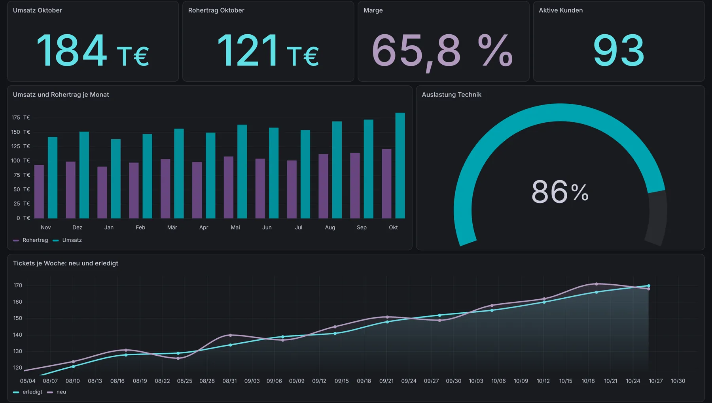

Montags tippe ich keine Zahlen mehr ab
Kennzahlen automatisch erfassen – jeden Tag statt einmal im Monat
Kaffee holen, drei Systeme aufmachen, Zahlen in eine Excel tippen. Das war lange mein Montagsritual. Heute sind die Zahlen da, bevor ich es bin.

Ehrlich gesagt war das mein Montagsritual: Kaffee holen, drei Systeme aufmachen, Zahlen in eine Excel tippen. Umsatz, offene Tickets, Auslastung. Eine Stunde, manchmal mehr. Und wenn ich im Urlaub war, gab es eben keine Zahlen.
Einleitung: Die Zahlen gibt es. Man sieht sie nur nicht.
Fast jedes Unternehmen hat seine Zahlen. Sie liegen im ERP, im Ticketsystem, in der Buchhaltung, im Shop. Was fehlt, ist der Moment, in dem sie zusammenkommen. Meistens passiert das einmal im Monat, von Hand, in einer Excel. Und dann ist der Monat schon vorbei.
Was heißt „Kennzahlen automatisch erfassen“ – und warum lohnt sich das?
Automatisch erfassen heißt: Eine Maschine holt die Werte jeden Tag aus den Quellsystemen ab, bereinigt sie und legt sie als Zeitreihe ab. Nicht als Momentaufnahme, sondern Tag für Tag.
Der Nutzen ist größer, als er klingt:
- Sie sehen Trends, nicht nur Stände. Ein schlechter Tag ist kein Problem, drei schlechte Wochen schon.
- Niemand muss mehr tippen. Damit fallen auch die Tippfehler weg.
- Die Zahlen sind unabhängig von einer Person. Urlaub, Krankheit, Kündigung – das Dashboard ist trotzdem aktuell.
So machen wir es: jeden Morgen um 3:20 Uhr
Ein n8n-Flow läuft jeden Morgen um 3:20 Uhr. Er holt die Tageswerte ab, bereitet sie auf und speichert sie. Danach lädt er die Definitionen unserer Kennzahlen und berechnet daraus die „Lage“ – also die Handvoll Werte, die ich morgens sehen will. Fällt ein Lauf aus, kann er die fehlenden Tage nachholen.
Im Dashboard sieht das dann so aus (hier mit Beispieldaten):

Das Spannende war gar nicht die Technik. Spannend war die Frage: Welche Zahlen brauche ich eigentlich wirklich? Von den 23 Spalten in meiner alten Excel sind am Ende sieben übrig geblieben. Der Rest war Gewohnheit.
Drei Praxistipps für Ihr Dashboard
- Erst die Entscheidung, dann die Zahl. Schreiben Sie zu jeder Kennzahl auf, welche Entscheidung sie auslösen soll. Wenn keine, dann weg damit.
- Lieber täglich und grob als monatlich und perfekt. Eine Zahl, die heute stimmt und morgen etwas korrigiert wird, ist wertvoller als eine perfekte Zahl in vier Wochen.
- Jede Zahl braucht eine Quelle. Im Dashboard muss man sehen können, woher ein Wert kommt. Sonst diskutiert man im Meeting über die Zahl statt über die Sache.
Was passiert, wenn Sie nichts tun?
- Wirtschaftlich: Sie reagieren auf den Oktober im November. Bei Umsatz, Liquidität oder Auslastung ist das oft zu spät.
- Im Team: Die Zahlen hängen an einer Person. Ist sie weg, ist es dunkel.
- Für Sie persönlich: Jede Woche geht eine Stunde für etwas drauf, das eine Maschine besser kann.
Häufige Fragen
Welche Zahlen sollte ich zuerst automatisieren?
Die, nach denen Sie jede Woche fragen. Meist sind das Umsatz, offene Posten, Auftragslage und eine Zahl zur Auslastung. Mehr braucht es am Anfang selten.
Brauche ich dafür ein neues System?
In den meisten Fällen nicht. Die Daten liegen schon in Ihren Systemen. Neu ist nur der Flow, der sie abholt, und das Dashboard, das sie zeigt.
Was kostet so ein Dashboard?
Das hängt von der Zahl der Quellen ab. Wir arbeiten mit Festpreisen je Baustein, damit Sie vorher wissen, woran Sie sind.
Fazit
Zahlen sichtbar zu machen ist keine Raketenwissenschaft. Es braucht eine saubere Frage, ein paar Schnittstellen und einen Flow, der jeden Morgen zuverlässig läuft. Der Rest ist Gewohnheit – diesmal eine gute.
Wenn Sie montags auch noch tippen: Schreiben Sie mir gern, welche Zahlen das sind. Oder buchen Sie direkt einen Taktcheck. Oft ist das schneller gelöst, als man denkt.

Nils Rochholl automatisiert Prozesse für Unternehmen und Systemhäuser. Fragen zum Beitrag? Schreiben Sie mir: hallo@takteins.de